GPIO 输出
输出就是让引脚变成一根由程序控制的电线：写 0 拉到低电平，写 1 拉到高电平。
STM32 的每个 GPIO 引脚内部都有同一套结构：输出驱动器（一对 P-MOS / N-MOS）、输入驱动器（TTL 施密特触发器）、上下拉电阻开关，以及两个保护二极管。
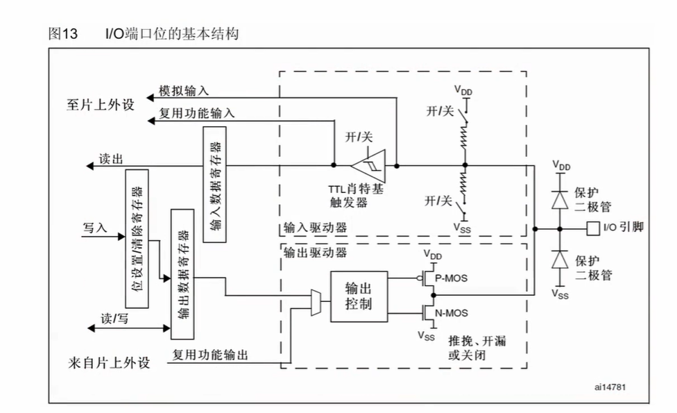
四种输出模式
输出模式由两个维度交叉得到：谁来控制（通用 / 复用），和怎么推（推挽 / 开漏）。
通用输出推挽
程序直接控制，上下管交替导通。输出能力最强，驱动 LED、驱动电平最常用。
通用输出开漏
程序直接控制，上管恒断。只能主动拉低，高电平要靠外部上拉，常用于电平转换与总线。
复用输出推挽
引脚交给串口、定时器、SPI 等外设托管，由外设产生波形。此时程序写数据寄存器不再生效。
复用输出开漏
同上，但输出级为开漏。I²C 这类需要线与的总线就工作在这个模式。
推挽与开漏
把两只 MOS 管看成两个开关，中间那个点就是引脚：上管合上接 VDD，下管合上接 VSS。所有输出模式的区别，只在于这两个开关怎么配合。
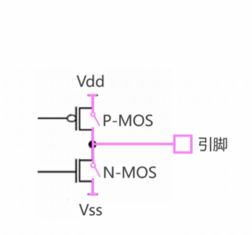
推挽：交替导通
写 0 时 N-MOS 导通、P-MOS 关断，引脚被拉到 VSS，输出低电平；写 1 时反过来，引脚被拉到 VDD，输出高电平。两个方向都是管子主动去推，一推一挽，所以叫推挽。
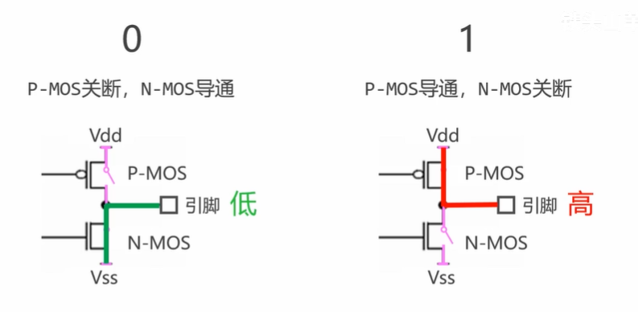
开漏：上管恒断
写 0 时 N-MOS 导通，引脚拉低；写 1 时两只管子全断，引脚处于高阻态，没有电流通路。按欧姆定律，电阻趋于无穷大，此时引脚电压由外部电路决定 —— 通常靠一颗外部上拉电阻把它拉高。
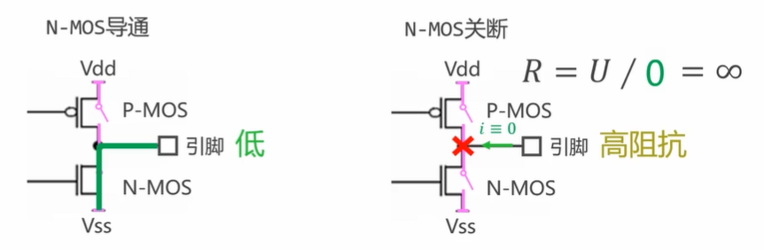
| 模式 | 写 0 | 写 1 | 特点 |
|---|---|---|---|
| 推挽 | 低电平 | 高电平 | 双向主动驱动，速度快、带载强 |
| 开漏 | 低电平 | 高阻（电平由外部定） | 只能拉低；接上拉才有高电平；可做线与与电平转换 |
通用与复用
通用：控制权在程序手里，通过输出数据寄存器直接控制 IO 引脚。复用：把引脚的控制权交给片上其他模块，比如串口模块要往这根线发数据，就由它来产生波形。
判断方法很直接：这根线上跑的是你想写的电平，还是某个外设的波形？前者用通用，后者用复用。
最大输出速率
理想的数字波形是方波，但实际上高低切换需要时间：电压从低爬到高叫上升时间，从高跌落叫下降时间，中间停留在高电平的时间叫保持时间。
如果把切换频率提上去，斜坡就会越靠越近，平顶越来越短。再快，上升沿和下降沿直接重合，引脚上就再也量不出有效的高低电平了 —— 这是“速度不够”的真正含义。
解决办法不是降频，而是让边沿更陡 —— 用更快的上升、下降速度，把平顶重新让出来。
STM32 因此提供了三档速度，由 CubeMX 里的 Maximum output speed 选择：
| 档位 | 上升 / 下降时间 | 保持时间 | 最高输出频率 |
|---|---|---|---|
| 低速 Low | ≈ 125 ns | ≈ 200 ns | 2 MHz |
| 中速 Medium | ≈ 25 ns | ≈ 50 ns | 10 MHz |
| 高速 High | ≈ 5 ns | ≈ 10 ns | 50 MHz |
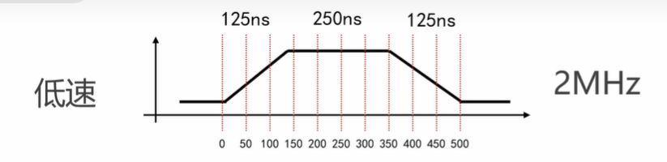
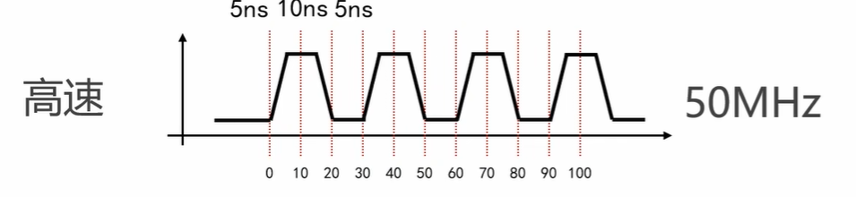
怎么选：够用就好。边沿越陡，高频成分越多，电磁干扰和功耗也越大。LED、按键、继电器这类慢信号用低速完全足够。
实验一：点亮 LED
同一颗灯，接法不同，写 0 和写 1 的含义正好相反。
两种接法
LED 有极性：长脚是阳极，短脚是阴极。电流只能从阳极流向阴极，所以它接在引脚和电源之间时，方向决定了什么电平才算“亮”。
推挽接法
阳极接引脚、阴极接 VSS。写 1 输出高电平，电流从引脚流出点亮；写 0 熄灭。
开漏接法
阳极接 VDD、阴极接引脚。写 0 把引脚拉低，电流灌入引脚点亮；写 1 输出高阻，灯灭。
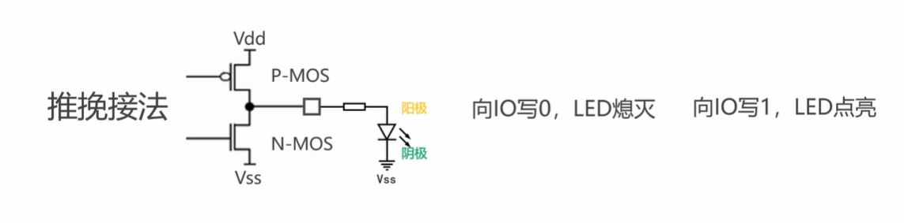
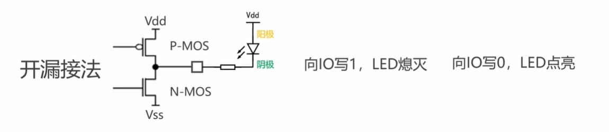
亮度上也有区别：推挽接法的亮度更稳定、更亮，因为高电平是管子主动推上去的；开漏接法的亮度取决于外部上拉电阻的设计，上拉阻值偏大时灯会偏暗。
硬件与配置
板子上自带一颗 LED，接在 PC13，用的是开漏接法 —— 低电平点亮。如果想试推挽接法，可以外接一颗 LED 到 PA9：阳极接 PA9，阴极经限流电阻接 GND，电阻取 1 kΩ 左右。
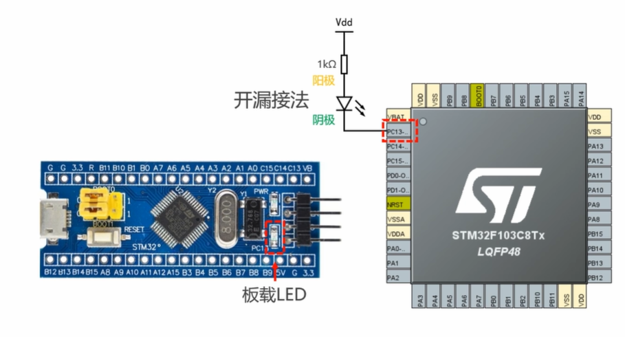
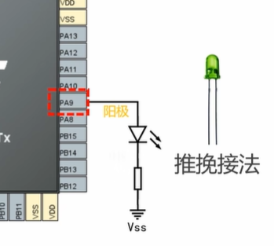
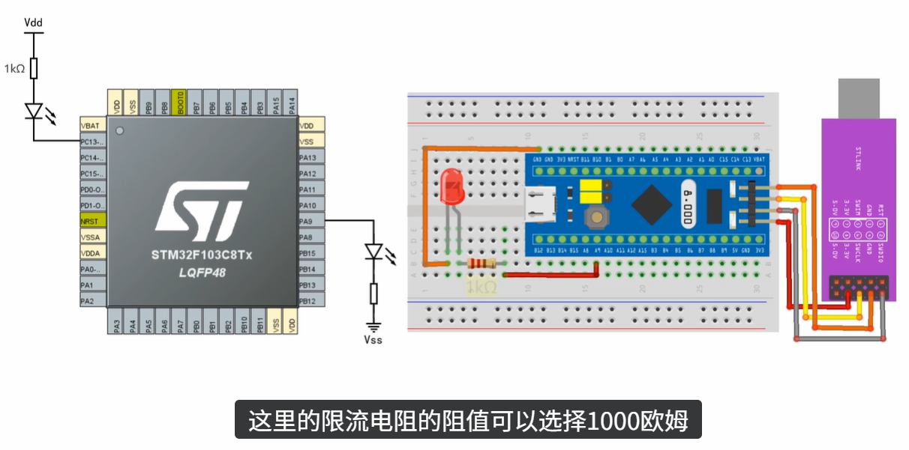
CubeMX 里对 PA9 的配置：模式选 Output Push Pull，初始电平 Low，上下拉选 No pull-up and no pull-down（这个实验用不到），速度选 Low —— LED 切换频率很低，没必要上高速。
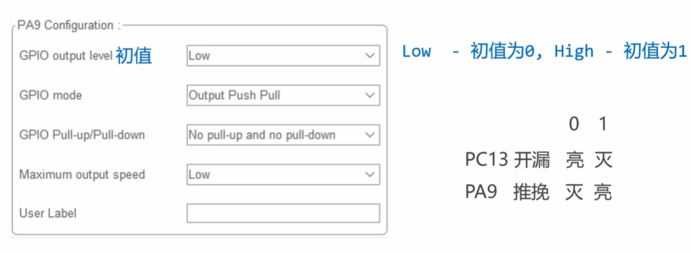
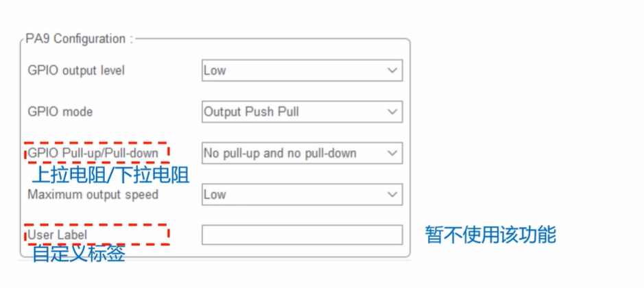
| 引脚 | 接法 | 写 0 | 写 1 |
|---|---|---|---|
PC13 板载 | 开漏 | 亮 | 灭 |
PA9 外接 | 推挽 | 灭 | 亮 |
代码
生成工程后，代码写在 main.c 的 while(1) 里。CubeMX 已经替我们生成了 HAL_Init()（HAL 库初始化）、SystemClock_Config()（系统时钟）、MX_GPIO_Init()（引脚初始化）三件事，不用自己写。
控制电平只需要一个接口：
void HAL_GPIO_WritePin(GPIOx, GPIO_Pin, PinState)- GPIOx
- 组编号，x 取 A/B/C/D，如
GPIOA、GPIOC - GPIO_Pin
- 引脚编号，
GPIO_PIN_0~GPIO_PIN_15 - PinState
GPIO_PIN_RESET= 写 0，GPIO_PIN_SET= 写 1
于是点灯与熄灭就是两行调用，注意两颗灯电平相反：
// 点亮
HAL_GPIO_WritePin(GPIOC, GPIO_PIN_13, GPIO_PIN_RESET); // PC13 开漏，写 0 点亮
HAL_GPIO_WritePin(GPIOA, GPIO_PIN_9, GPIO_PIN_SET); // PA9 推挽，写 1 点亮
// 熄灭
HAL_GPIO_WritePin(GPIOC, GPIO_PIN_13, GPIO_PIN_SET); // 开漏，写 1 熄灭
HAL_GPIO_WritePin(GPIOA, GPIO_PIN_9, GPIO_PIN_RESET); // 推挽，写 0 熄灭让它们闪起来，就是把这两组语句交替执行，中间加延时：
while (1)
{
HAL_GPIO_WritePin(GPIOC, GPIO_PIN_13, GPIO_PIN_RESET); // PC13 亮
HAL_GPIO_WritePin(GPIOA, GPIO_PIN_9, GPIO_PIN_SET); // PA9 亮
HAL_Delay(500); // 保持 0.5 秒
HAL_GPIO_WritePin(GPIOC, GPIO_PIN_13, GPIO_PIN_SET); // PC13 灭
HAL_GPIO_WritePin(GPIOA, GPIO_PIN_9, GPIO_PIN_RESET); // PA9 灭
HAL_Delay(500); // 保持 0.5 秒
}为什么 WritePin 不是在翻转电平：它写的是确定值，不是取反。所以两行调用可以任意重复执行，灯的状态始终是确定的 —— 这也是它比“读回来再取反”更可靠的地方。
GPIO 输入
输入是反过来的事：引脚不主动输出，而是把外面的电压读进片内的数据寄存器。
四种输入模式
输入侧除了模拟模式，其余三种都由端口内部的两只电阻开关决定 —— 就是结构图里 VDD 下方和 VSS 上方那两串电阻。
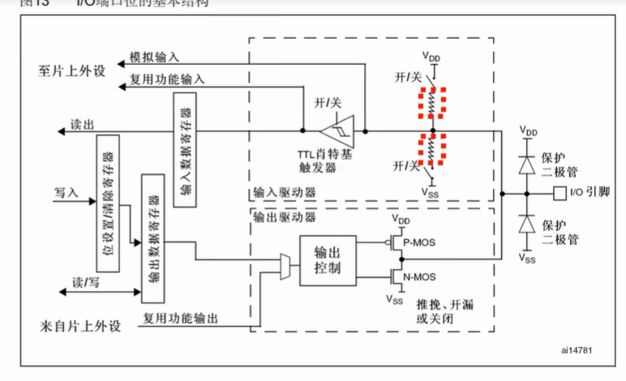
三种模式的区别只有一句话：哪只电阻被接通。
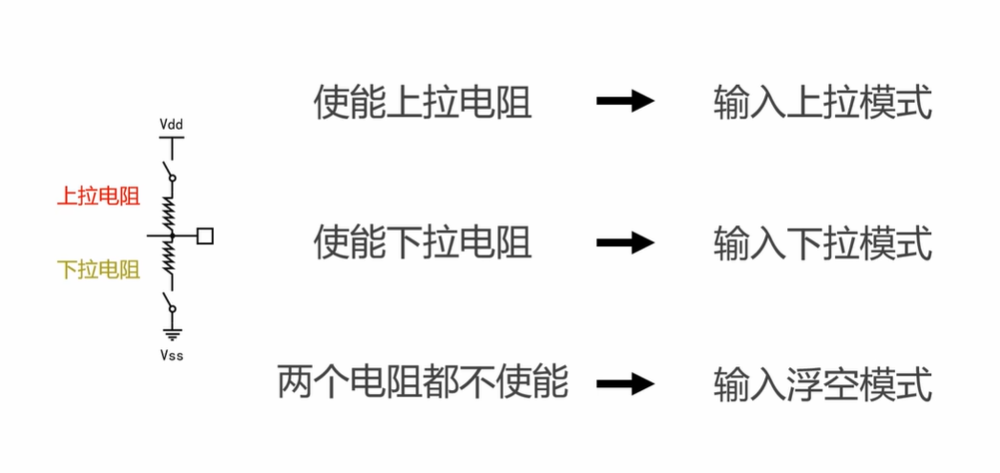
| 模式 | 开关状态 | 引脚悬空时读到 | 用途 |
|---|---|---|---|
| 输入上拉 | 上面闭合 | 高电平 1 | 按键接地型，最常用 |
| 输入下拉 | 下面闭合 | 低电平 0 | 按键接电源型 |
| 输入浮空 | 都不闭合 | 不确定 | 外部已有确定的驱动源时 |
| 模拟模式 | 输入通路关闭 | —— | ADC 采样，交给模拟外设 |
上拉电阻和下拉电阻的作用是同一个：在引脚没有被外部电路驱动时，给它一个确定的默认电平。上拉给默认高电压，下拉给默认低电压。
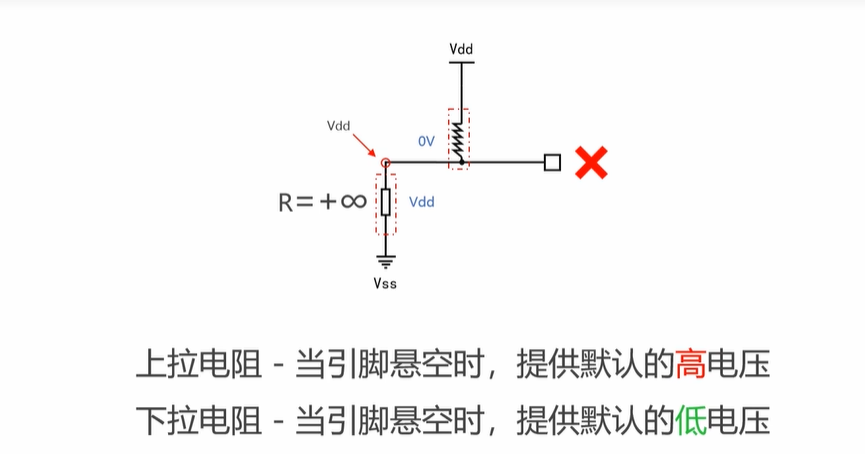
浮空为什么危险
都不接的时候，引脚和任何电平之间都没有一条低阻通路，等效电阻趋于无穷大。此时引脚上的电压由漏电流、空间干扰、手上的一点点电荷决定 —— 读出来可能是 1，也可能下一秒变成 0。
所以除了“外部已经有确定的驱动源”这种场合，输入一律要选上拉或下拉。按键、开关、跳线帽都属于这一类。
实验二：按键控制 LED
输入的第一个真实场景：用一根线的电平，去决定另一根线的电平。
两种接法
机械按键本质上就是一个开关，靠开合改变引脚的电平。单片机把该引脚配成输入，读取高低电平来判断按键是否按下。
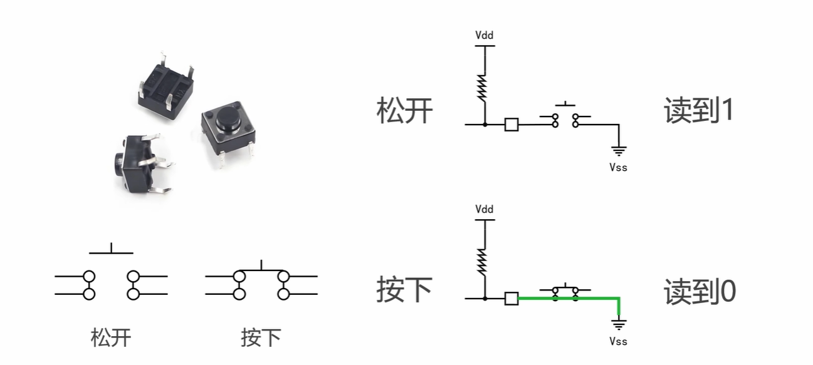
上拉接法
按键一端接 GND，另一端接 GPIO，GPIO 内部或外部接上拉电阻到 VDD。
未按下 → 高电平 1；按下 → 短接到 GND，低电平 0。
下拉接法
按键一端接 VDD，另一端接 GPIO，GPIO 接下拉电阻到 GND。
未按下 → 低电平 0；按下 → 高电平 1。
不能这么接：不要把按键直接跨接在 VDD 和 GND 之间。没有电阻限流，一按下就是电源短路，轻则复位，重则烧毁引脚。
硬件与配置
这个实验里，PA9 接按钮，PC13 的板载 LED 负责输出。PA9 配置为 Input mode，上下拉选 Pull-up（对应上面的上拉接法，按下读到 0）。
| 引脚 | GPIO mode | Output level / Pull | 效果 |
|---|---|---|---|
PC13 | Output Open Drain | Initial level = High | 开漏输出，上电即为高阻 → 灯灭 |
PA9 | Input mode | Pull-up | 上拉输入，松开为 1，按下为 0 |
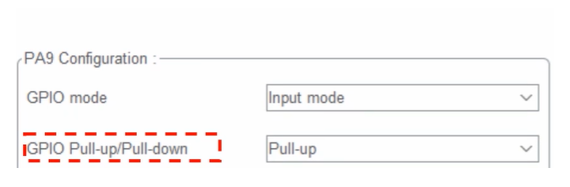
代码
思路很直白：在 while(1) 里不断读 PA9，读到 1 说明松开着，熄灭 LED；读到 0 说明按下，点亮 LED。
while (1)
{
if (PA9 == 1) // 按键松开
{
PC13 = 1; // 熄灭 LED
}
else // PA9 == 0，按键按下
{
PC13 = 0; // 点亮 LED
}
}把伪代码换成 HAL 接口，读电平用的是：
GPIO_PinState HAL_GPIO_ReadPin(GPIOx, GPIO_Pin)- GPIOx
- 组编号，x 取 A/B/C/D
- GPIO_Pin
- 引脚编号，
GPIO_PIN_0~GPIO_PIN_15 - 返回值
- 读到的电平：
GPIO_PIN_RESET= 0，GPIO_PIN_SET= 1
while (1)
{
if (HAL_GPIO_ReadPin(GPIOA, GPIO_PIN_9) == GPIO_PIN_SET) // 读到 1：松开
{
HAL_GPIO_WritePin(GPIOC, GPIO_PIN_13, GPIO_PIN_SET); // 熄灭 LED
}
else // 读到 0：按下
{
HAL_GPIO_WritePin(GPIOC, GPIO_PIN_13, GPIO_PIN_RESET); // 点亮 LED
}
}还要消抖：机械触点在按下和松开的一瞬间会快速弹跳几次，几毫秒内电平可能来回变。上面的轮询代码能跑通，但真实项目里通常要加消抖：检测到变化后延时 10 ms 左右再读一次确认，或者用定时器扫描。硬件上也可以在按键两端并一颗小电容。
速查与易错点
三个接口
| 接口 | 作用 | 关键参数 |
|---|---|---|
HAL_GPIO_WritePin |
向引脚写 0 / 1 | 组、引脚号、RESET(0) / SET(1) |
HAL_GPIO_ReadPin |
读引脚当前电平 | 组、引脚号；返回 GPIO_PinState |
HAL_Delay |
毫秒级延时 | 毫秒数，500 即 0.5 秒 |
电平对照
| 场景 | 写 / 读到 0 | 写 / 读到 1 |
|---|---|---|
| PC13 板载 LED（开漏，阴极接引脚） | 亮 | 灭 |
| PA9 外接 LED（推挽，阳极接引脚） | 灭 | 亮 |
| PA9 按键（上拉，另一端接 GND） | 按下 | 松开 |
容易踩的坑
- 开漏指望着输出高电平。写 1 只是高阻，没有上拉电阻就量不到高电平，灯也不会亮。
- 把板载灯当成“写 1 亮”。PC13 是开漏接法，写 0 才亮，和外接的 PA9 正好相反。
- LED 不接限流电阻。直接跨在电源和地之间，电流只受管子内阻限制，很容易烧灯或烧引脚。
- 输入配成浮空。没有外部驱动时读数随机，按键会“自己乱跳”。
- 复用模式下还去写 GPIO。控制权已经交给外设，再写数据寄存器不生效。
- 速度档位一律选最高。边沿越陡，干扰越大；LED、按键用低速就够。